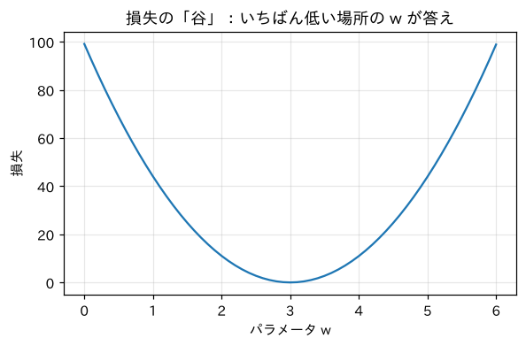

第2部 ゼロから作る · 第7章
学習とは坂を下ること：微分と勾配降下法
目隠しで山を下りる方法と、PyTorchの自動微分
おすすめは「ページを読みながら、コードを自分のノートブックに1セルずつ貼って実行」。完成ノートは困ったときの答え合わせ用です。
つくるもの
データから「ちょうどいい数」を自動で探す、いちばん小さな学習プログラム（勾配降下法）
身につく数学・理論
- モデル・パラメータ・損失の関係
- 二乗誤差
- 微分＝傾き（数値微分で確かめる）
- 勾配降下法と学習率
- 偏微分と勾配（パラメータが2つ以上）
- 連鎖律と誤差逆伝播法
- PyTorchの自動微分（
backward）
新しく使うPython・PyTorch
requires_grad=Trueloss.backward()と.gradwith torch.no_grad():の本当の意味.grad.zero_()
この章でつくるもの
「機械学習」の学習とは何をしているのか。その答えを、この章で手に入れます。キーワードは「坂を下る」。たった1つの数をデータに合わせる小さな問題から始めて、最後はPyTorchが自動で「下る方向」を計算してくれる仕組み（自動微分）まで進みます。これが、第8章以降のすべてのモデルの学習エンジンです。
これまでの復習とつながり：第3章・第5章・第6章とのつながり

ミナト
微分……高校でやった気がするけど、記憶が霧の向こうです。

ボンゴ先生
安心してほしい。この章で使う微分は「坂の傾き」、それだけだ。公式を暗記する必要はない。傾きはコンピュータに測らせればいい。キミの仕事は「傾きが分かったら、どっちに進むか」を考えることだけだ。
ボンゴ焼き問題
ボンゴ先生は、週末にたこ焼きならぬ「ボンゴ焼き」の屋台を出しています。焼いた時間と、売れた個数の記録がこちら。
hours = [1, 2, 3, 4, 5] # 焼いた時間
sold = [2.9, 6.2, 8.8, 12.1, 15.0] # 売れた個数（10個単位）だいたい「時間 × 3」くらいでしょうか。これを モデル にしてみます。
は「1時間あたり何個売れるか」を表す数で、これが パラメータ です。 をいくつにすれば、記録にいちばん合うでしょう？
まず「合っている度合い」を測るものさしを作ります。予想と実際の差を2乗して平均したものを 損失 にします。
def predict(w, x):
return w * x
def loss_fn(w):
total = 0.0
for x, y in zip(hours, sold):
total += (predict(w, x) - y) ** 2
return total / len(hours)
for w in [1, 2, 3, 4]:
print(f"w = {w} のとき、損失 = {loss_fn(w):.3f}")w = 1 のとき、損失 = 44.100
w = 2 のとき、損失 = 11.060
w = 3 のとき、損失 = 0.020
w = 4 のとき、損失 = 10.980Pythonの道具箱：** は2乗、-= は「引いて代入」
(予想 - 実際) ** 2 の ** はべき乗で、a ** 2 は （）です。第3章の model(**inputs) の **（辞書の中身を渡す書き方）とは、記号が同じだけで別物です。** の前に値があれば2乗、( のすぐ後にあれば辞書の受け渡し、と見分けます。
第3章の total += p（足して代入）と同じ仲間に、w -= a（w = w - a、引いて代入）があります。この章の学習ループで使います。
理論の小部屋：二乗誤差
「予想 − 実際」は、外れた方向によってプラスにもマイナスにもなります。そのまま平均すると打ち消し合ってしまうので、2乗してから平均します。これを 平均二乗誤差（mean squared error、MSE）と呼びます。2乗するので、大きく外れたほど厳しく罰せられます。
第5章の言語モデルの損失（驚きの平均）とは式が違いますが、「小さいほど良い、モデルの成績表」という役割は同じです。
あたりが良さそうです。グラフにしてみましょう。
!pip install -q matplotlib-fontjaimport matplotlib.pyplot as plt
import matplotlib_fontja
ws = [i / 10 for i in range(0, 61)]
plt.figure(figsize=(6, 3.5))
plt.plot(ws, [loss_fn(w) for w in ws])
plt.xlabel("パラメータ w")
plt.ylabel("損失")
plt.title("損失の「谷」：いちばん低い場所の w が答え")
plt.grid(alpha=0.3)
plt.show()
お椀のような谷の形です。学習とは、この谷の一番底を探すことです。
今回はパラメータが1個なので、グラフを描いて目で探せました。でも、第1章のLLMのパラメータは約5億個。5億次元のグラフは、描くのも見るのも無理です。そこで、グラフ全体を見ずに、今いる場所の傾きだけを頼りに下っていく方法を使います。
目隠しで山を下りる
ボンゴ先生
キミは濃い霧の山の中にいる。目隠しをされていて、遠くは見えない。分かるのは足元の傾きだけ。どうやって谷底まで下りる？
ミナト
足元が下っている方向に、一歩ずつ進めばいいんじゃないですか？
ボンゴ先生
正解！ それが 勾配降下法（こうばいこうかほう）だ。人類の機械学習の大部分は、この「足元の傾きを見て一歩下る」でできている。拍子抜けするほど単純だろう？
足元の傾きを測ってみましょう。 をほんの少し（）だけ動かして、損失がどれだけ変わるかを見ます。
def slope(w, h=0.0001):
return (loss_fn(w + h) - loss_fn(w)) / h
for w in [1, 2, 3, 4]:
print(f"w = {w} での傾き：{slope(w):8.3f}")w = 1 での傾き： -44.039
w = 2 での傾き： -22.039
w = 3 での傾き： -0.039
w = 4 での傾き： 21.961数学の道具箱：微分 ：9ステップで理由から理解する
① 解決したい問題：グラフ全体を見ずに、「いまのパラメータ をほんの少し右に動かしたら、損失 が増えるか減るか（どれくらい急な坂か）」を1つの数で知りたい。
② そのままでは困る理由：損失 の値だけ見ても（たとえば「いま損失は 11.06」）、右に行けば下がるのか左に行けば下がるのか分かりません。
③ 新しい発想： をごく小さな幅 だけ右へ動かしたときの 「縦の変化 ÷ 横の変化」（＝坂の傾き）を測る。
を限りなく に近づけた正確な傾きを 微分（derivative）と言い、 と書きます。
④ 記号の読み方テーブル：
| 記号 | 読み方 | 意味 |
|---|---|---|
| ディー（differential） | 「ほんの少しの変化」を表す印（掛け算の文字ではないので約分不可！） | |
| エルをダブリューで微分したもの | をほんの少し増やしたときの「 の変化 ÷ の変化」（坂の傾き） | |
| エイチ | 数値微分で使う微小なずらし幅（例：0.0001） |
⑤ 小さな数字で手計算：シンプルな谷 （谷底は ）で、 として傾きを測ってみます。
- ：、 → 傾き （マイナス＝右へ行くと下る）
- ：、 → 傾き （プラス＝右へ行くと上る → 左へ下る）
- ：、 → 傾き （ほぼ 0 ＝谷底）
⑥ 符号のまとめ（超重要）：
- （マイナス）→ 右（ を大きくする方向）が下り坂
- （プラス）→ 左（ を小さくする方向）が下り坂
- → 平ら（谷底に到達）
つまり、傾きと逆の方向に進めば必ず下れるのです。上のコードのように微小な で実際に測る方法を 数値微分 と言います。
勾配降下法
一歩の大きさを 学習率（learning rate）と呼び、数式ではギリシャ文字の （イータ）、コードでは lr と書きます。ルールはこれだけ。
数学の道具箱：勾配降下法：なぜ「引き算（）」で両方うまくいくのか？
① 解決したい問題：いま測った傾き を使って、パラメータ を谷底の方向へ1歩だけ動かしたい。
② 記号の読み方：
- （左向き矢印）：「右辺の計算結果で左辺の変数を更新（上書き）する」という意味（プログラミングの
=と同じ） - （イータ）：学習率（learning rate、
lr）。一歩の歩幅を決める正の数（例：0.01）
③ なぜ足し算ではなく「引き算」なのか？（符号の完全分析）：
| いまの場所 | 傾き の符号 | の符号 | の動き | 結果 |
|---|---|---|---|---|
| 谷底の左側（例：） | マイナス（例：） | マイナス × マイナス ＝ プラス | 右（大きい側）へ進む | 谷底へ下る！ |
| 谷底の右側（例：） | プラス（例：） | マイナス × プラス ＝ マイナス | 左（小さい側）へ進む | 谷底へ下る！ |
| ちょうど谷底（） | 動かない | 谷底で止まる！ |
④ 小さな数字で2ステップ手計算：谷 （正確な傾きは ）を、、学習率 からスタートしてみます。
- ステップ1：傾き → （損失は に激減！）
- ステップ2：傾き → （損失は にさらに減少！）
坂が急なうちは大きく（+0.8）、谷底に近づくと傾きが緩やかになって自然に小さく（+0.48）進んでいるのがわかります。
# 上の手計算2ステップを最小Pythonで確認
w, lr = 1.0, 0.2
for step in range(2):
grad = 2 * (w - 3) # L(w) = (w - 3)^2 の正確な傾き
w = w - lr * grad # 傾きと逆向きに一歩進む
print(f"step {step + 1}: w = {w:.2f}, loss = {(w - 3)**2:.3f}")
# step 1: w = 1.80, loss = 1.440
# step 2: w = 2.28, loss = 0.518「傾きと逆向きに、傾きの大きさに比例して進む」。ボンゴ焼きのデータで実際に15ステップ下ってみましょう。
w = 0.0
lr = 0.01
for step in range(15):
w = w - lr * slope(w)
if step % 2 == 0:
print(f"ステップ {step:2d}：w = {w:.4f} 損失 = {loss_fn(w):.4f}")Pythonの道具箱：% は割り算の余り
step % 2 は「step を2で割った余り」です。偶数なら0、奇数なら1なので、if step % 2 == 0: は「偶数のステップのときだけ表示する」という意味になります。この先の学習ループでは、if step % 500 == 0:（500ステップごとに表示）の形で何度も出てきます。
ステップ 0：w = 0.6604 損失 = 60.3252
ステップ 2：w = 1.5773 損失 = 22.3426
ステップ 4：w = 2.1351 損失 = 8.2831
ステップ 6：w = 2.4745 損失 = 3.0788
ステップ 8：w = 2.6810 損失 = 1.1523
ステップ 10：w = 2.8066 損失 = 0.4392
ステップ 12：w = 2.8830 損失 = 0.1752
ステップ 14：w = 2.9295 損失 = 0.0775から出発して、15歩で3の近くまで来ました。誰も「答えは3だよ」と教えていないのに、傾きだけを頼りに谷底へ向かっています。最初は坂が急なので大きく進み、谷底に近づくと坂が緩やかになって、歩幅が自然に小さくなっているのにも注目してください。
やってみよう：学習率を変えてみよう
上のデモで、学習率をいろいろ変えてみましょう。
- 小さすぎる（0.05など）：確実だけど、なかなか谷底に着かない。カタツムリ
- ちょうどいい（0.3など）：すいすい下る
- 大きすぎる（2近く）：谷を飛び越えて、反対側の斜面に着地。行ったり来たりして、最悪どこかへ飛んでいく
ただし、「ちょうどいい学習率」は坂の急さで変わります。デモの坂はゆるやかなので0.3でちょうどよく、ボンゴ焼きの坂はずっと急なので、0.01〜0.05くらいがちょうどいい値です。ボンゴ焼きのコードで lr = 0.1 にして試してみてください。デモでは小さめの0.1でも、ボンゴ焼きでは損失が爆発するのが見られます。学習率は、機械学習でいちばん大事なハイパーパラメータです。モデルやデータが変わったら、また探し直す必要があります。
もう1つ、デモで「別の場所から」を何回か押してみてください。デモの坂には、本当の谷底のほかに、途中に小さなくぼみがあります。スタート地点によっては、そこで止まってしまいます。勾配降下法は「今いる場所の傾き」しか見ないので、もっと深い谷が別の場所にあっても気づけないのです（局所最適解と言います）。目隠しで山を下りるのですから、仕方ありません。ただ、パラメータが何億個もある実際のLLMでは、こうした浅いくぼみに完全にはまって動けなくなることは、意外と少ないと考えられています。
パラメータが2つになったら：勾配
実際には、時間がゼロでも少しは売れる（常連さんがいる）かもしれません。モデルを少し賢くします。
パラメータが と の2つになりました。今度は2次元の地形（山と谷）を下ることになります。傾きも「 方向の傾き」と「 方向の傾き」の2つを測ります。
def loss2(w, b):
return sum((w * x + b - y) ** 2 for x, y in zip(hours, sold)) / len(hours)
def slopes(w, b, h=0.0001):
dw = (loss2(w + h, b) - loss2(w, b)) / h # w だけ少し動かす
db = (loss2(w, b + h) - loss2(w, b)) / h # b だけ少し動かす
return dw, db
w, b = 0.0, 0.0
for step in range(2000):
dw, db = slopes(w, b)
w, b = w - 0.02 * dw, b - 0.02 * db
print(f"w = {w:.3f}, b = {b:.3f}, 損失 = {loss2(w, b):.4f}")w = 3.010, b = -0.029, 損失 = 0.0198数学の道具箱：偏微分 と勾配 ：多変数でもやり方は同じ
① 解決したい問題：パラメータが2個（ と ）、さらには5億個になったとき、それぞれのつまみをどちらへどれだけ動かせばよいかを表したい。
② 新しい発想：「他のパラメータは全部ピタッと止めたまま、1つだけほんの少し動かしたときの傾き」を測る。これを 偏微分（へんびぶん、partial derivative）と言い、丸っこい を使って書きます。そして全パラメータの偏微分を1つのベクトルに並べたものが 勾配（gradient）です。
③ 記号の読み方テーブル：
| 記号 | 読み方 | 意味 |
|---|---|---|
| ラウンドディー／デル／パーシャル | 「他の変数は固定して、これだけ少し動かす」という偏微分の合図 | |
| エルをダブリューで偏微分したもの | を止めて だけ少し動かしたときの の傾き | |
| ナブラ（nabla） | すべてのパラメータの偏微分を並べてベクトルにする演算子 | |
| 勾配（グラディエント） | 「最も急に上る方向」を指す矢印ベクトル（逆向き が最も急に下る方向！） |
④ 小さな数字で手計算：データ1点（）の損失 を で偏微分してみます（このとき ）。
- で偏微分（ を定数扱い → ）：
- で偏微分（ を定数扱い → ）：
- よって勾配ベクトルは 。学習率 なら と更新され、 でなんと1歩で損失
0に着地します！
パラメータが5億個でも、勾配が5億個の数の並び（ベクトル）になるだけで、やることはまったく同じです。……ただし、数値微分で5億個の偏微分を測るには、モデルを5億回動かす必要があります。それはさすがに無理。そこで次の秘密兵器の出番です。
PyTorchの自動微分
PyTorchは、計算の過程を記録しておいて、正確な勾配を一発で計算してくれます。これを 自動微分（autograd）と言います。
import torch
x = torch.tensor(hours, dtype=torch.float32)
y = torch.tensor(sold)
w = torch.tensor(1.0, requires_grad=True) # 「この数の勾配を知りたい」と宣言
loss = ((w * x - y) ** 2).mean()
loss.backward() # 勾配を計算！
print("損失：", loss.item())
print("自動微分の傾き：", w.grad.item())
print("数値微分の傾き：", slope(1.0))損失： 44.099998474121094
自動微分の傾き： -44.040000915527344
数値微分の傾き： -44.03890000006072loss.backward() を呼ぶだけで、w.grad に傾き が入りました。数値微分とほぼ同じ値ですが、小数点以下3桁目からずれています。数値微分は「少し右に動かした」ときの傾きなので誤差があり、自動微分のほうが正確な値です。
では、自動微分で学習ループを書き直しましょう。これが、この先何度も書くことになる 学習ループの基本形 です。
w = torch.tensor(0.0, requires_grad=True)
b = torch.tensor(0.0, requires_grad=True)
lr = 0.02
for step in range(2000):
loss = ((w * x + b - y) ** 2).mean() # ① 予想して、損失を計算
loss.backward() # ② 勾配を計算
with torch.no_grad(): # ③ パラメータを更新（ここは記録しない）
w -= lr * w.grad
b -= lr * b.grad
w.grad.zero_() # ④ 勾配を0に戻す
b.grad.zero_()
print(f"w = {w.item():.3f}, b = {b.item():.3f}, 損失 = {loss.item():.4f}")w = 3.010, b = -0.030, 損失 = 0.0198つまずき注意：④を忘れると大変
PyTorchの .grad は、backward() を呼ぶたびに 足し算されていく（累積する）仕様です。④の zero_() を忘れると、前のステップの勾配がどんどん雪だるま式に積み上がり、学習がめちゃくちゃになります。エラーメッセージが出ずに結果だけがおかしくなるので、気づきにくいバグの代表格です。学習の様子がおかしいときは、まずここを疑いましょう。
なぜ自動で0にリセットしてくれないのかというと、GPUメモリが足りないときに何回かに分けて勾配を足し合わせる技（第16章の「勾配累積」）などで、この累積仕様が役に立つからです。便利な機能の裏返しとして、普段は毎回手動でリセット（ゼロクリア）してあげる必要があります。
理論の小部屋：第3章の no_grad の謎が解ける
③で with torch.no_grad(): を使っているのは、「パラメータの更新」は学習のための計算ではないので、記録の外でやる必要があるからです。記録したまま w -= lr * w.grad を実行すると、PyTorchは「記録中のパラメータを直接書き換えようとしている」と判断して、RuntimeError: a leaf Variable that requires grad is being used in an in-place operation. というエラーで止めます。
そして第3章では、文章を生成するだけ（学習しない）だったので、no_grad で記録を止めて、メモリと時間を節約していたのでした。あのおまじないの意味が、ようやく分かりましたね。
基礎の補足PyTorch 学習ループ4ステップの解剖（なぜ zero_() と no_grad() が必須なのか）
| ステップ | コード | 役割 | 忘れるとどうなる？ |
|---|---|---|---|
| ① 順伝播＋損失 | loss = ... |
予想と損失を計算しつつ、計算グラフを記録 | no_grad() の中に入れると backward() でエラー |
| ② 逆伝播 | loss.backward() |
計算グラフを逆向きにたどり .grad を算出 |
.grad が None のままで更新できない |
| ③ 更新 | with torch.no_grad(): w -= lr * w.grad |
記録を切って、勾配の逆向きへ一歩下る | no_grad() を忘れると RuntimeError（leaf in-place error） |
| ④ 勾配リセット | w.grad.zero_() |
次のステップに古い勾配が足されないよう0に戻す | エラーは出ないが勾配が雪だるま式に足され学習が崩壊！ |
# なぜ zero_() を忘れると危険なのか？（最小の再現例）
t = torch.tensor(2.0, requires_grad=True)
(3 * t).backward() # 1回目：3t の微分は 3.0
print(t.grad.item()) # → 3.0
(3 * t).backward() # zero_() せずに2回目！
print(t.grad.item()) # → 6.0（上書きではなく 3.0 + 3.0 に足し算されてしまう！）あわせて、自動微分の記録を止める・切り離す3つの道具の使い分けも押さえておきましょう（第11章以降で頻出します）。
| 書き方 | 対象と返り値 | 何をするか | 使いどころ |
|---|---|---|---|
with torch.no_grad(): |
ブロック全体 | 中の計算グラフ記録をすべてオフにする | パラメータ更新・検証・生成（推論） |
t.detach() |
テンソル1個 → 記録なしの Tensor |
値（shape・dtype・device）はそのままに計算グラフだけ切り離す | グラフ描画・Attention重み観察・別計算への受け渡し |
s.item() |
要素1個のテンソル → Pythonの float/int |
数値1個を取り出す（記録も切れる） | losses.append(loss.item()) のようにログ記録（テンソルのまま溜めるとメモリリーク！） |
自動微分の中身：連鎖律
自動微分はどうやって勾配を計算しているのでしょう？ 鍵は 連鎖律（れんさりつ、chain rule）です。
数学の道具箱：連鎖律 と計算グラフの手計算トレース
① 解決したい問題：何段も計算を重ねた式（ニューラルネットワークは何十段もの計算の合成！）について、一番最後の出力（損失）を一番最初の入力やパラメータで微分したい。
② 新しい発想：計算を途中の変数 に分解し、各ステップの局所的な傾きを掛け算でつなぐ（伝言ゲームの倍率の掛け算）。
③ 具体的な数字で「順伝播 → 逆伝播」を手計算トレース（ のとき）：
- 順伝播（左から右へ値を計算し、途中結果 をメモする）：
- 入力：
- 中間：（← この を覚えておく！）
- 出力：
- 逆伝播（右から左へ、傾きを掛け算しながら戻す）：
- ゴール自身：（ が1動けば は1動く）
- 2乗を逆走：（メモしておいた を使う！）
- を逆走：
# 順伝播＋手動逆伝播（PyTorch の autograd が裏でやっていることそのもの）
x = 2.0
u = 3 * x + 1 # 順伝播①：u = 7.0 をメモ
y = u ** 2 # 順伝播②：y = 49.0
dy_dy = 1.0 # 逆伝播の出発点
dy_du = dy_dy * (2 * u) # 1.0 * 14.0 = 14.0
dy_dx = dy_du * 3.0 # 14.0 * 3.0 = 42.0
print(f"y={y}, dy/du={dy_du}, dy/dx={dy_dx}")途中の傾きを掛け算でつないでいく。これが連鎖律です。伝言ゲームで、各人が「受け取った話を3倍に盛って伝える」「14倍に盛って伝える」をすると、最後は 倍に盛られて届くのと同じです。
x2 = torch.tensor(2.0, requires_grad=True) # 上のデータの x と区別するため、x2 という名前に
u = 3 * x2 + 1
y2 = u ** 2
y2.backward()
print("自動微分：", x2.grad.item())
print("連鎖律で手計算：", 2 * u.item() * 3)自動微分： 42.0
連鎖律で手計算： 42.0理論の小部屋：誤差逆伝播法（バックプロパゲーション）
PyTorchは、計算するたびに「何と何から、どんな計算で作られたか」を記録しています（計算グラフ）。backward() を呼ぶと、損失から出発して計算を逆向きにたどりながら、連鎖律で傾きを掛け算していきます。
逆伝播：dy/dx (=42) ←(×3)← dy/du (=14) ←(×2u)← dy/dy (=1)
5億個のパラメータがあっても、この逆向きの伝言ゲームを1回やるだけで、全部の勾配がまとめて求まります。この方法を 誤差逆伝播法（ごさぎゃくでんぱほう、backpropagation）と言います。ニューラルネットワークの学習を現実的なものにした、最重要の発明です。
基本情報とつながる：誤差逆伝播法
基本情報技術者試験のシラバスにも、AIの用語として「誤差逆伝播法」「勾配降下法」「学習率」が登場します。試験では用語の意味を問われるだけですが、あなたはもう自分で動かしたことがある人です。暗記カードより、ボンゴ焼きのほうが忘れにくいはずです。
もっと深く微分の公式を少しだけ
この教科書では、微分はPyTorchに任せます。でも、いくつかの公式を知っていると、式を読むときに便利です。
| 関数 | 微分 | ひとこと |
|---|---|---|
| 2乗の傾きは2倍の | ||
| 上の一般形 | ||
| 微分しても変わらない、変わり者 | ||
| 第5章の対数の傾き | ||
| 直線の傾きは一定 |
例えばボンゴ焼きの損失 を で微分すると、連鎖律で になります。 を入れると -44.04。自動微分の答えと一致します。
できたらチェック
まとめ
- 学習とは、損失が小さくなるようにパラメータを調整すること
- 微分は傾き。傾きと逆向きに少しずつ進むのが 勾配降下法：
- パラメータが複数なら、偏微分を並べた 勾配 を使う
- PyTorchの 自動微分 は、連鎖律で計算を逆にたどり、全パラメータの勾配を一度に求める（誤差逆伝播法）
- 学習ループの基本形：① 損失計算 → ②
backward()→ ③ 更新（no_grad）→ ④ 勾配を0に
ボンゴ先生
道具は全部そろった。表（第6章）と、坂を下る方法（この章）。次の章では、この2つを合体させる。bigramの確率表の中身を「数える」のをやめて、勾配降下法で「学習」させるんだ。結果がどうなるか、予想しておいてくれ。
説明の読了チェックです（ブラウザ内にのみ保存）。「理解・定着」は途中の確認問題・自力実装・間隔復習の結果と合わせて記録されます。